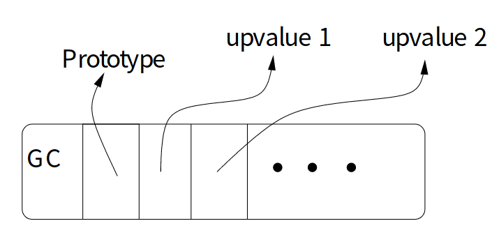
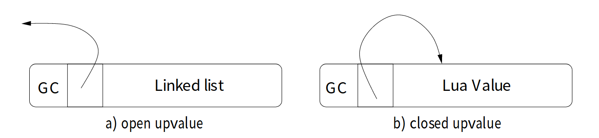
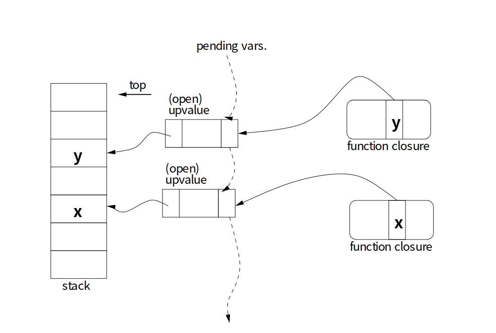

如何实现闭包
如何实现闭包？其实是一个非常基础的问题，不过还是来说一下吧。
首先是词法作用域和动态作用域的区别，动态作用域的典型是shell script、cmake这种，我们应该在其他的文章中有提及了，而大多数编程语言都是词法作用域（又叫做静态作用域）的，对于动态作用域来说闭包没有什么意义。
1 | function A() { |
代码1是一段javascript代码，函数A返回了一个函数B，而函数B捕获了外层的变量a，在函数B中对外部的变量进行了操作。
这样其实可以用来模拟对象，如代码2。
1 | function createUser(userName, userID) { |
捕获方式
闭包的捕获分为两种，一种是值捕获，一种是引用捕获。值捕获比较简单，也就是拷贝一遍被捕获的数据，而引用捕获则是将引用拷贝进来。
c++中需要明确说明捕获的方式是什么，而在java中，目前只支持值捕获，下面是一个c++的lambda示例。
1 | int main() { |
先执行了closure1、然后是closure2，输出是100, 99，由于a使用的是值捕获所以在closure2中有一份单独的拷贝，所以在closure1中的修改并不会被closure2看到，而b使用的是引用捕获，在closure1中的修改可以被closure2看到。在使用引用捕获的时候必须注意生命周期问题，c++中必须要使用者自己进行管理，如果在返回之后使用这两个lambda就会出现空悬引用的问题。
在java中，只支持值捕获：
1 | public class Main { |
这里实际上捕获的是s的指针，指向一个String对象，它并不是引用，所以仍旧是值捕获，这也是为什么java实际上在进行函数调用时是“pass-by-value”的。
引用和指针实际上存在区别，这一点在c++中比较明显，但是在gc语言中似乎就不明显了，在c++中，简单认为ptr1 = ptr2，使得ptr1指向和ptr2一样的对象，ref1 = ref2，使得调用ref1指向的对象的=运算符重载（operator =）。
warning
最后需要注意一点，在javascript中，应该不存在值捕获（至少我用的时候没有观察到），但是这篇文章中会提到值捕获和拷贝，因为我没有找到更加适合的语言作为例子，也许过一阵子可以替换为c++
实现
实现闭包实际上非常简单，比如在上面的代码1中，在对函数B进行分析时发现变量a并没有在当前作用域中被定义，那么就需要到外层中寻找，如果外层没有则抛出未定义错误，而在外层找到则可以判断为这是一个外部捕获的变量，所以进行捕获，如果这之中有多层，那么需要层层进行传递，如图1，作用域C需要捕获变量a导致作用域B也需要捕获变量a。

依旧是代码1，在函数A看来，函数B实际上是一个对象，这也就是为什么叫做闭包对象，这个对象本身和另外一个变量b没有什么不同，只是它支持被调用，这也是为什么闭包可以被传递，因为闭包本身只是对象，因此代码：
1 | function acfun() { |
实际上等同于：
1 | function acfun() { |
创建在一个函数中创建一个嵌套的函数实际上就是创建了一个对象。
一个闭包对象可以简单实现为：{function pointer, datablock pointer}，第一个字段为函数指针，第二个字段为一个数据块，用于保存捕获的数据。在对datablock进行处理的时候需要注意对齐要求，以及尽可能压缩空间。
下面用伪代码来说明一下实现闭包操作的代码序列吧，假设需要实现一个代码1中的闭包，不过实际上这只是在模拟，所以别当真。
创建闭包
我们假设是对变量a进行了值捕获，同时a变量实际上类型为int，但是刚刚提到了javascript中会进行引用捕获，这里只是为了方便说明而已。
在生成一个闭包对象的时候需要将被捕获的变量作为参数。
1 | function_ptr = address of function B // function_ptr为B的地址 |
调用闭包
在调用闭包对象的时候需要将datablock作为第一个参数传入：
1 | // b为从A中返回一个闭包对象。 |
闭包中访问外部变量
而对于外部变量的访问也需要进行修改，如果普通的变量通过frame pointer加上偏移来进行访问，那么对于外部捕获的变量就通过datablock pointer加上偏移来访问，每个外部变量在datablock中的偏移需要在编译时确定。
1 | a = ((int*)(datablock_ptr + 0))[0] // 刚才给a分配的偏移为0，可以将datablock_ptr当做void* |
改进
其实上面的实现在一些情况下是比较低效的，原因是它假定了所有的内嵌函数捕获的外部变量都可能在外部变量失效后使用，也就是：
1 | function acfun() { |
所以在创建闭包之处就将其进行了拷贝。但是在另外一些情况下，比如：
1 | function acfun() { |
在bili执行时，acfun的本地变量a实际上不会被消除掉，所以根本没有必要对其进行复制（假设会发生复制吧，按照我们上面的实现），只需要有个指针指向它就行了，所以可以对bili的使用进行分析，判断它是否会被当做返回值或者是作为参数传入到其他的函数中，如果是和上面一样的方式被使用，那么没有必要进行任何的复制了。
static chain
这种方式能够实现一些比较受限的闭包，但是在上面提到的那种情况中就可以通过static chain来实现，具体内容可以参考另外一篇文章。
lua Upvalue
lua里面通过一个叫做upvalue的方式实现了捕获[1]，感觉挺有意思的，所以这里来介绍一下，算是对[1]的一个归纳，我也不确定里面的内容是否过时了，不过lua停留在5版本已经非常久了，应该大差不差的。[1]是一篇挺好的文章的，还介绍了一下关于closure和lua的一些内容，我之前也度过lua源码，但是可惜没有读懂，很大的原因就是我看不懂upvalue，所以就没继续了，要是当时看到这篇文章的话应该就能读下去了吧？
在lua中一个closure对象结构如下：

图中的GC部分涉及GC，并不是这里需要关系的部分，然后是Prototype指针，这个指向一些关于closure的静态信息，如虚拟机代码以及upvalue数组的长度等。最后是upvalue数组，数组中元素是指向upvalue的指针。
一个upvalue结构如下：

upvalue有两个状态，一个是open，一个是closed，两个状态下域的信息并不相同。首先是GC头，同样忽略它，然后一个域是指针，在open状态下，指向被捕获的对象（值），在closed的情况下，会将被捕获的对象复制到upvalue中，所以指针指向自己的内部。
如果被捕获的值仍然在栈上，那么其状态就是open，而如果不在就是closed，closed代表已经被拷贝到了upvalue对象中，这实际上实现了一种lazy的方式，只有在必须被拷贝的情况下才会发生拷贝，所以lua虚拟机有一个特殊的指令，CLOSE用于关闭被捕获的变量。
不过lua使用的是基于寄存器（register-based）的虚拟机，所以概念上并不叫做栈，虽然实际上就是类似于栈一样的东西，具体可以参考我的另外一篇文章。
@@ 补充链接
而open状态下的那个Linked list和upvalue的管理有关，在open的状态下，upvalue是通过链表进行串联的：

由于使用链表进行串联，在关闭的时候就十分方便了，只要记录下离开一个作用域需要关闭到哪一个就行了，所以对链表进行组织的时候需要按照作用域的嵌套深度进行排序。
在创建闭包的时候也有特殊指令，CLOSURE，它负责创建一个闭包对象，创建一个闭包对象需要知道它所依赖的外部变量的数量，以及存在的位置，这些信息会在编译时被收集。对于外部变量存在的位置，有两种可能，第一种情况是，它是外层函数的本地变量，第二种情况是，它是外层函数的捕获变量，所以需要对每个被捕获的变量进行区别，因为对不同的情况有不同的处理方式，在创建闭包时必须让闭包对象中的upvalue指针数组的每个元素都指向正确的upvalue对象。
对于第二种情况，比较简单，此时upvalue对象已经被创建了，只需要赋值外层对象的upvalue指针就行了。对于第一种情况，则首先需要判断是否已经存在一个upvalue对象指向被捕获的变量，如果存在那么就不能够新建upvalue而是对象，而是要使用现有的upvalue对象。为了实现共享，也就是当修改时，能够被其他捕获了同一个变量的闭包函数观察到，所以需要保证捕获同一个变量的多个闭包都共享同一个upvalue对象：
1 | function bili() |
在上面的代码中，closure1和closure2都捕获了x，所以需要共享同一个upvalue：

如果没有被创建，那么需要创建一个新的upvalue，并加入到链表中，同时外部的函数需要记录哪些变量已经被捕获了（我也没具体看，不过应该是通过记录寄存器编号），以及对应的upvalue的地址。
引用
[1] Ierusalimschy, Roberto et al. “Closures in Lua.” (2013).